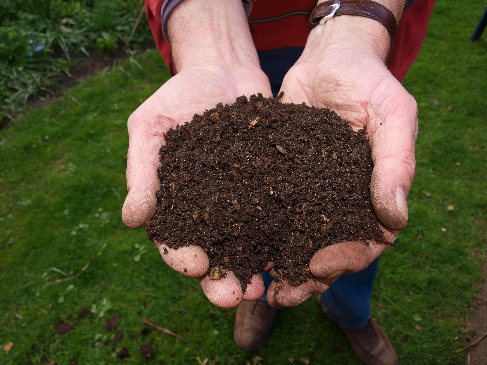

⠀
El compost es un proceso natural de descomposición de materia orgánica que da como resultado un producto rico en nutrientes, conocido como compost o abono orgánico.
Este proceso se lleva a cabo mediante la acción de microorganismos, como bacterias y hongos, que descomponen los materiales orgánicos, como restos de alimentos y residuos de jardín, en un producto final similar al suelo llamado humus.
⠀El compostaje es una práctica beneficiosa para el medioambiente por varias razones:
⠀El compostaje ayuda a reducir la cantidad de residuos que se envían a los vertederos.
Al compostar los desechos orgánicos en lugar de desecharlos, se disminuye la cantidad de basura que termina en los vertederos, lo que a su vez reduce la emisión de gases de efecto invernadero y ayuda a combatir el problema global de la acumulación de desechos.
⠀El compost es un valioso fertilizante orgánico que mejora la estructura y la fertilidad del suelo.
Al agregar compost al suelo, se incrementa su capacidad para retener agua y nutrientes, se promueve el crecimiento de microorganismos beneficiosos y se reduce la necesidad de fertilizantes químicos, que pueden contaminar el suelo y el agua.
⠀El compost mejora la estructura del suelo y aumenta su capacidad para retener agua, lo que ayuda a reducir la erosión del suelo causada por la lluvia y el viento.
Esto es especialmente importante en áreas donde la deforestación u otras actividades humanas han dejado el suelo vulnerable a la erosión.
⠀El compostaje promueve la biodiversidad al proporcionar un hábitat favorable para una amplia gama de organismos beneficiosos del suelo, como lombrices, insectos y microorganismos.
Estos organismos contribuyen al ciclo natural de los nutrientes y ayudan a mantener la salud del ecosistema.
⠀Preparar nuestro compost casero no tiene casi dificultad, pero sí hay que tener claras tres cosas importantes antes de empezar:
⠀Un recipiente adecuado en el que ir añadiendo la materia prima que, poco a poco, se convertirá en compost. Este recipiente lo podemos comprar o, mejor aún, construir uno propio reciclando y dando una segunda vida a objetos que ya han cumplido su labor inicial como, por ejemplo, contenedores viejos, palets, cajas de fruta de madera, etc.
⠀Nuestra mezcla de compost casero va a ir creciendo a partir de diferentes tipos de materiales organicos: cáscaras de huevo, pieles de frutas y de verduras, ramitas, hierba húmeda, posos de café…
⠀La clave está en combinar el azúcar, la celulosa y el nitrógeno de los diferentes desechos orgánicos con el fin de preparar ese abono orgánico que, en esencia, es el compost casero.
⠀Un riesgo importante es que los desechos se pudran y que consigamos en vez de abono, una masa pútrida y pestilente. Para evitar que esto ocurra debemos:
⠀Teniendo en cuenta lo anterior ya podemos comenzar a preparar nuestro compost. Existen diversas formas de hacer compost casero, pero la que te presentamos a continuación es una de las más simples, ideal para que toda la familia participe en esta gratificante experiencia.
⠀Como mencionamos anteriormente, el compostador es simplemente el recipiente donde depositaremos las diferentes capas de desechos que constituirán nuestro compost casero. Cualquier recipiente servirá, siempre que no esté en contacto directo con el suelo. Si optas por un balde o una caja es recomendable hacer algunos agujeros en la base.
⠀Es importante ubicar la compostera en un espacio donde haya sombra, así nuestro compost no queda expuesto directamente al sol.
⠀Luego tenemos que colocar una primera capa de tierra seguida de una capa de materiales secos como paja, ramas de poda, serrín, etc. Estas capas secas iniciales ayudarán a prevenir la putrefacción del fondo del compostador y a preservar la calidad de la mezcla.
⠀Algo que tienes que tener muy claro y transmitir a todos en la casa es que el compostador no es un cubo de basura, sino un recipiente que luego servirá para enriquecer la tierra de nuestro huerto urbano o de las plantas de nuestras macetas.
⠀En este contenedor añadiremos por capas diferentes productos o desechos, como peladuras de verduras y frutas, ramitas y hojas secas de los setos o plantas que hayamos podado, posos de café, cáscaras de huevo, etc.
⠀Es recomendable que vayamos intercalando capas de diferentes desechos orgánicos húmedos y secos, para que la mezcla de airee correctamente, así conseguiremos el equilibrio de humedad óptimo que necesita un compost de calidad y evitaremos que se pudra.
⠀Para que nuestro abono orgánico casero pueda desarrollarse adecuadamente y enriquecer nuestros cultivos ecológicos, es crucial mantener un nivel adecuado de humedad. Por lo tanto, es importante regar el compost de vez en cuando, evitando el encharcamiento del contenedor pero asegurándose de que la humedad penetre en las distintas capas que hemos agregado a nuestra caja de compost.
⠀En un plazo de 6 a 8 semanas se puede revisar el compostaje y verificar su olor y color. Si posee aroma a tierra fresca y color oscuro, significa que el compost ya está listo para agregar a las plantas, huertas o jardín.
